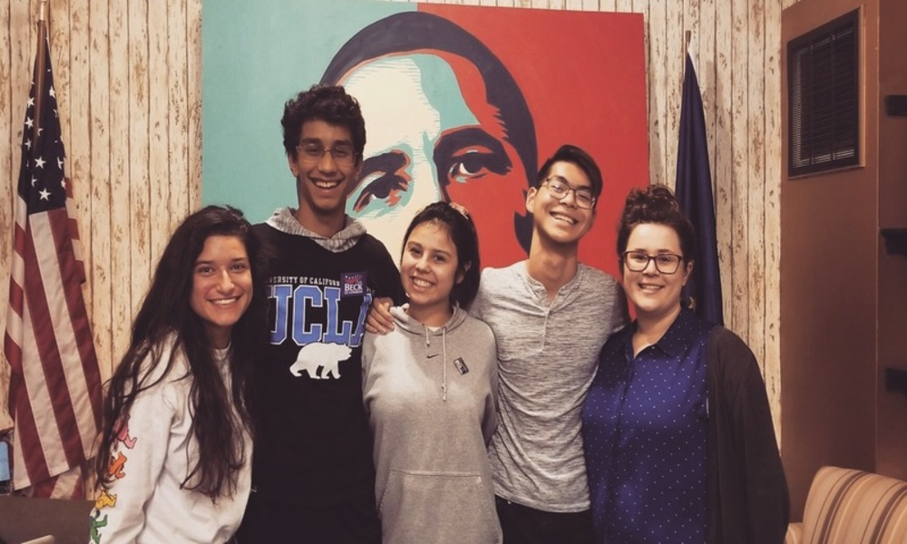

Most people know me as someone very politically active. They're correct. I had an incredible oppurtunity during the 2018 midterms to intern for our local democratic party. I worked mainly on Joe Donnelly and Chris Campbell's campaign, but logged countless hours phonebanking, canvassing, signmaking, etc.
While a stressful and tiring couple of months, this was legitimately some of the most fun I had that year. It was a highly driven environment with some of my closest friends and fantastic campaign managers and politicians. I expect to do something similar in 2020 and really value the experience I had. Blue wave!

The two other interns and our campaign managers who oversaw us <3